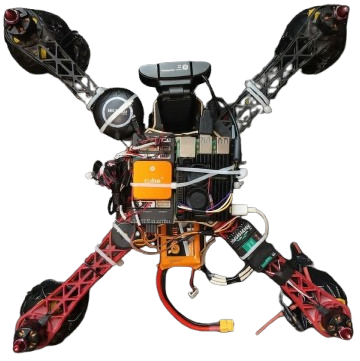
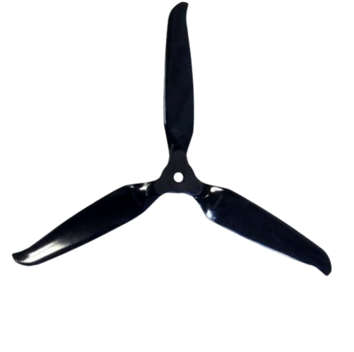

IIT Guwahati Internship
Autonomous drones, built from scratch
A research internship at IIT Guwahati spent assembling multi-rotor drones, configuring Pixhawk and Cube Orange flight controllers, and wiring a Raspberry Pi 4 into the loop for real-time vision.
The result: a follower drone that autonomously detects and tracks a manually piloted leader drone using onboard object detection.
↻ Leader–Follower architecture • YOLOv8 + MAVLink

